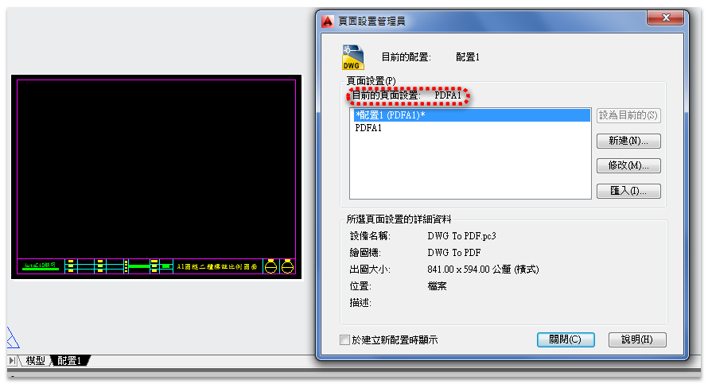
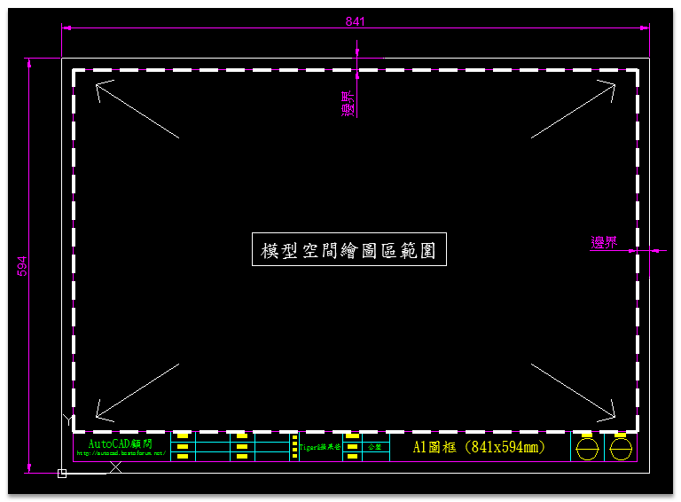
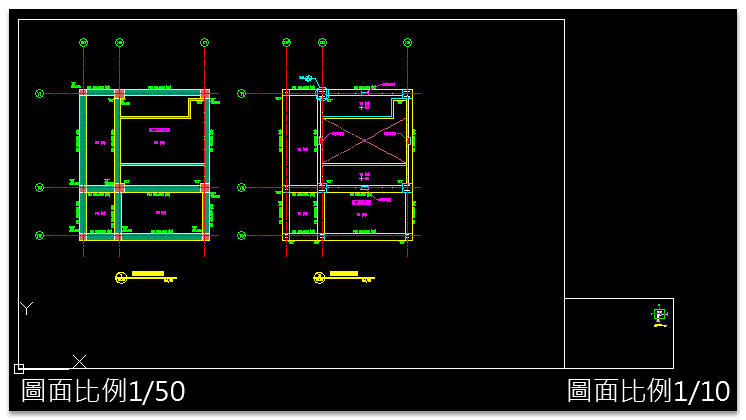
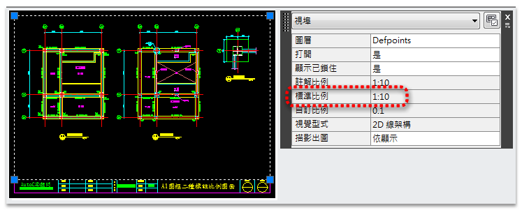
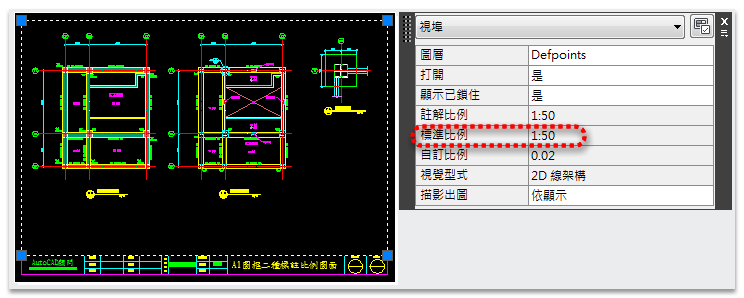
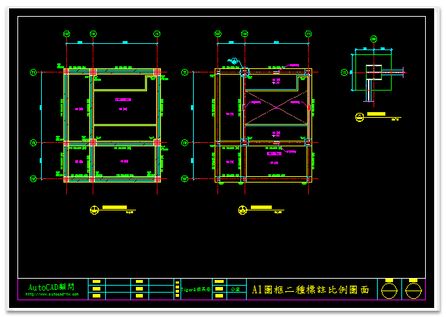
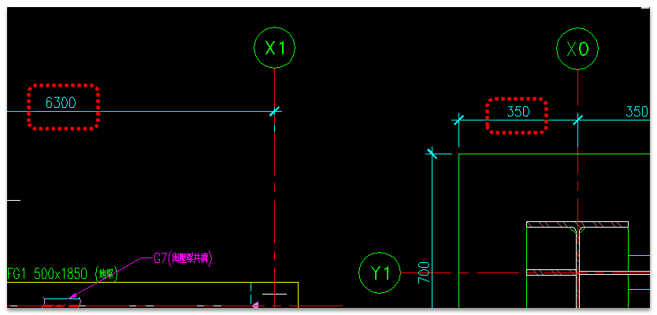

教學範例目標：
目標1 >> 讓使用者了解配置空間「圖紙」及模型空間「繪圖區範圍」關聯性。
目標2 >> 製作「繪圖區範圍」圖塊方式，規劃模型空間可繪圖區。
目標3 >> 新增「二種標註比例」設定，完成不同比例圖面之標註。
注意：操作步驟時有任何疑問請隨時提出。
載點1： https://app.box.com/s/1852nne3aoyzc2smd0a9
※資料夾檔案說明：
「S201.DWG」.....子圖（需插入外部參考圖框）
「XREF資料夾」.....外部參考底圖(母圖)放置位置
「X-TBLK.dwg」.....A1圖框底圖(母圖)
步驟一.插入外部參考「A1圖框」底圖，完成A1頁面設置

步驟二.定義「繪圖區範圍」，製作成圖塊

插入「繪圖區範圍」圖塊，放大致適當大小，即為該圖的「圖面比例」

步驟三.依照「二種圖面比例」建立二個「視埠」，定義「視埠比例」以及對齊模型空間「繪圖區範圍」有3種方式
1.使用「Express工具」的「對齊空間」alignspace指令
2.使用「ZOOM指令」的「窗選(W)」方式，需另外指定「端點End」物件鎖點
3.使用「ZOOM指令」的「中心點(C)」方式，再透過「視埠工具」定義「視埠比例」


步驟四.依照「二種圖面比例」，新增「二種比例」標註型式，依照不同圖面比例進行標註，在配置空間中標註文字字高均會一致。


請說明以下事項(參與練習將獲得「積分+1及威望值+6」，取前10名會員):
1.上傳完成的「二種標註比例圖檔」及「外部參考圖框檔」供檢測（請壓縮成ZIP格式檔）
說明:請使用論壇提供的上傳附件方式: 「教學」論壇上傳附件功能
2.範例中所學到的指令(如您未使用過的)
3.使用的AutoCAD版本
4.範例所需時間
5.您的意見補充
1.延伸範例主題： [觀念]規劃圖面單位及圖面比例
2.延伸範例主題： [測驗題]標準作業：A1圖框製作、樣版檔設定(一)
3.延伸範例主題： [測驗題]標準作業：A1圖框樣版檔規劃(二)
4.延伸範例主題： [測驗題]標準作業：A1圖框二種標註比例圖面(三)
5.延伸範例主題： [進階]AutoCAD巨集－建立視埠+設定比例+鎖護視埠